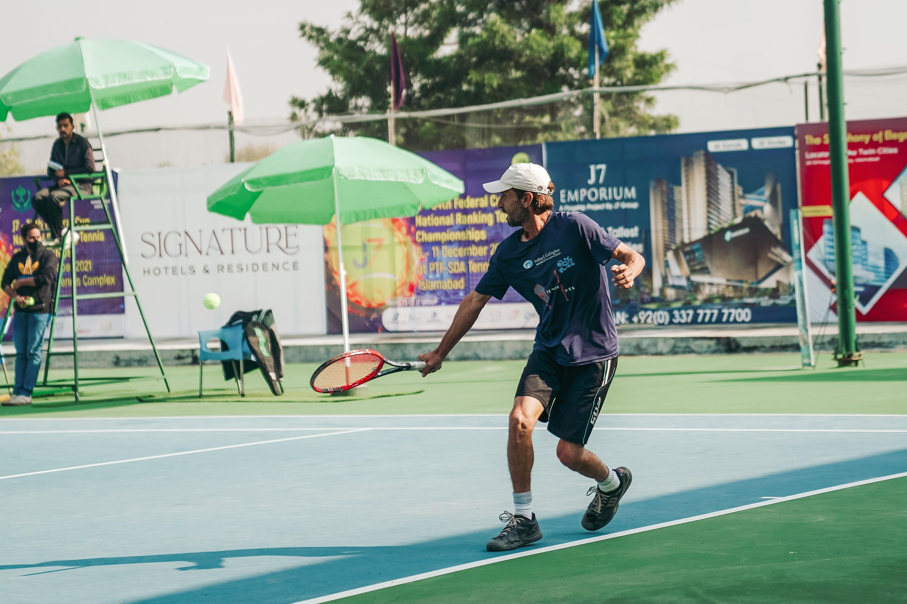
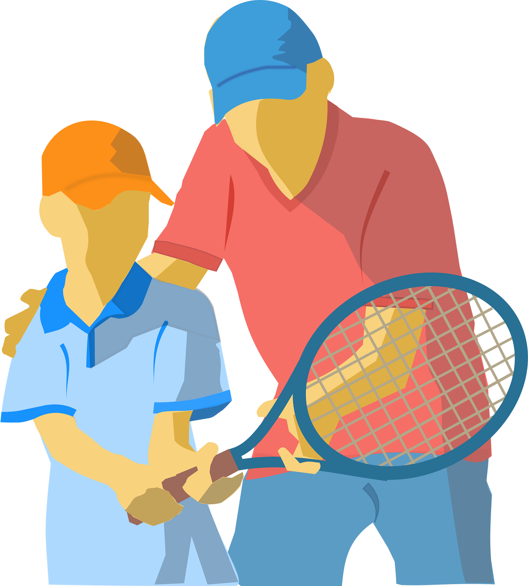
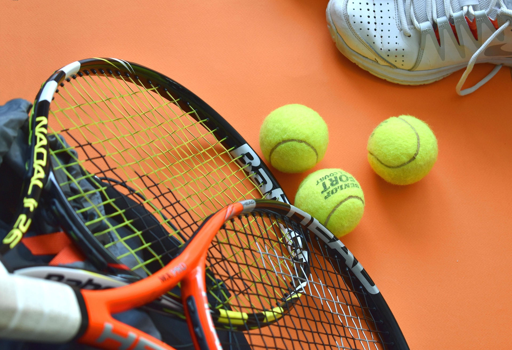

Search for a local club
Best way to start tennis, is to find a local tennis club here.
Or if some of your friends play tennis, ask them if they know any clubs nearby. Once you have found a local tennis club, you can contact them to find out about their programs and membership options.

Hire a coach
Tennis is a hard game, so it can be helpful to have a coach to guide you in the beginning. Coaching can help you get started a lot faster, when you don't have to figure everything out by yourself. Clubs usually offer starter courses for beginners, and we highly recommend taking one of those courses to get started.

Get basic equipment
Tennis requires some basic equipment, such as a racket and balls. You can start with a basic set and upgrade as you progress. We recommend getting a racket that is suitable for your skill level. Beginner rackets are usually lighter, easier to handle and have bigger heads. You should also get some comfortable sports clothing, shoes, some balls and a tennis bag to carry your equipment. There is a lot of apparel and equipment available for tennis, which you will get familiar with as you progress in the game.
